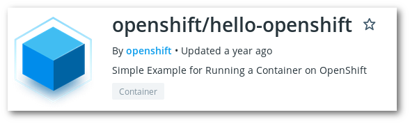

Pre-requisites, the project created in Exercise 1
In this exercise we will launch a simple container that will just say hello when asked at port 8888 using HTTP.

From the 'Application console', run the image openshift/hello-openshift* in a pod called hello-pod.
From the 'Application console':
10)8888 and 8080.* Also cached in docker-registry.rahti.csc.fi/cscfi/hello-openshift:latest.